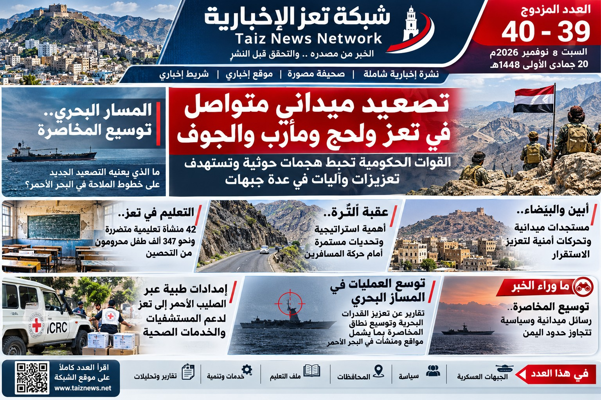
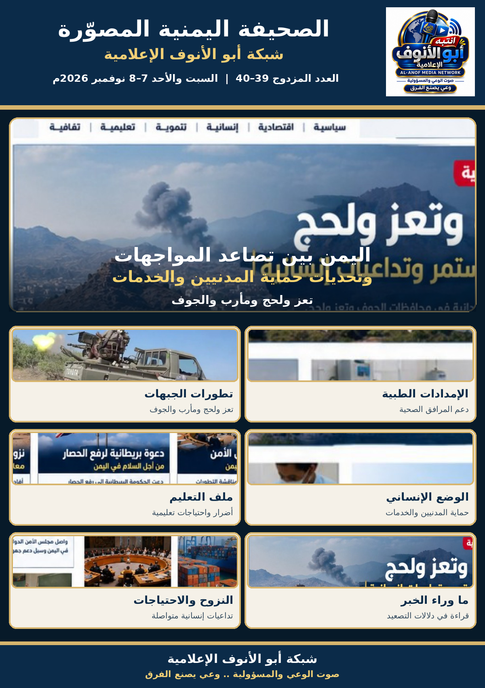

875 عملية استهداف وفق بيان القوات المسلحة
الإعلام الأمني ينقل بياناً عسكرياً بشأن العمليات وتقديرات الخسائر، مع نسبة الأرقام إلى مصدرها.
تفاصيل الخبرشبكة أبو الأنوف الإعلامية — العدد المزدوج 39–40
السبت والأحد 7–8 نوفمبر 2026م


في هذا العدد: تعز ولحج ومأرب والجوف — الإمدادات الطبية — التعليم — حركة المنافذ — قراءة «ما وراء الخبر».
 قراءة التحليل في النشرة الإلكترونية
قراءة التحليل في النشرة الإلكترونيةالإعلام الأمني ينقل بياناً عسكرياً بشأن العمليات وتقديرات الخسائر، مع نسبة الأرقام إلى مصدرها.
تفاصيل الخبررصد للتطورات الميدانية والتحذيرات المرتبطة بتأثر الخدمات والمرافق الصحية.
تفاصيل الخبراللجنة الدولية للصليب الأحمر تدعم مرافق صحية في المحافظة بمستلزمات طبية وحقائب جراحية.
تفاصيل الخبرقطاع التربية يعرض تقريراً عن الأضرار خلال سبتمبر وأكتوبر، وتُنسب المعلومات إلى الجهة المعلنة.
تفاصيل الخبر